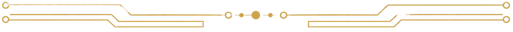
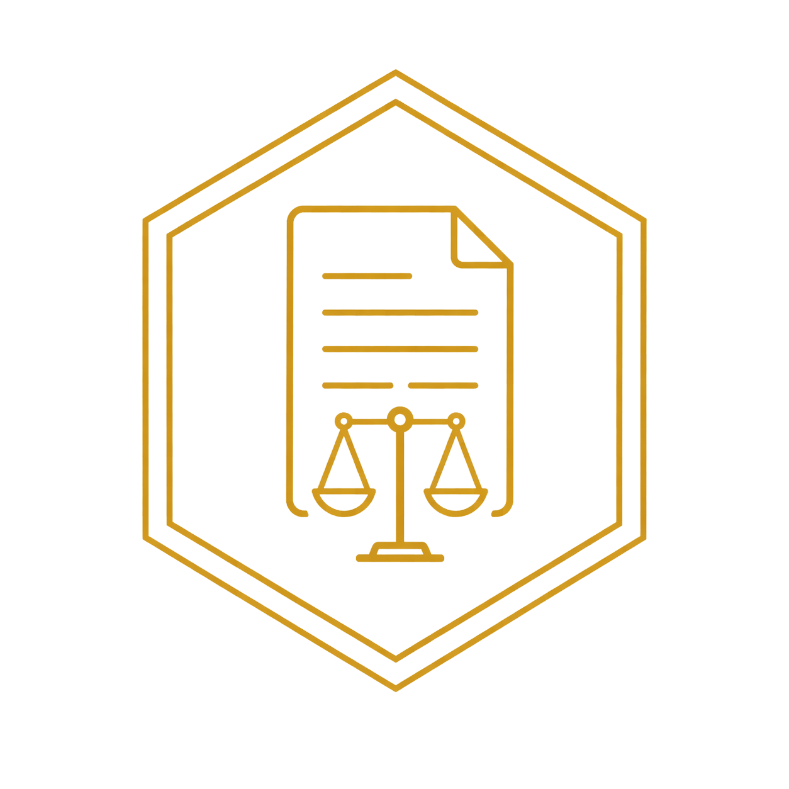

Perícia Digital, Preservação de Provas e Análise Técnica de Evidências Eletrônicas
Atendimento técnico para advogados, empresas e particulares em demandas envolvendo WhatsApp, redes sociais, páginas web, celulares, computadores, arquivos digitais e documentação probatória.
Procedimentos orientados por boas práticas de identificação, coleta, aquisição, preservação e documentação de evidências digitais.


Evidência Digital
Transformação de dados brutos em elementos probatórios válidos, compreensíveis e utilizáveis no contexto jurídico.
Análise Técnica
Interpretação especializada de dados digitais com foco na extração de informações relevantes para tomada de decisão.

Confiabilidade
Metodologia estruturada que permite resultados reproduzíveis e tecnicamente verificáveis.
Integridade
Utilização de mecanismos técnicos para assegurar que os dados analisados permanecem inalterados durante todo o processo.

Sustentação
Elaboração de pareceres e laudos fundamentados, com linguagem clara e base técnica sólida para sustentação em processos e auditorias.
Serviços mais procurados
Soluções técnicas especializadas com alto rigor científico para subsidiar demandas judiciais, corporativas e particulares.
Perícia em WhatsApp e Conversas Digitais
Análise técnica de conversas, arquivos, registros, mídias e elementos digitais relacionados a aplicativos de mensagem, com documentação adequada para demandas judiciais, extrajudiciais e particulares.
Aquisição Web e Preservação de Provas Online
Registro técnico de páginas, publicações, perfis, comentários, imagens, vídeos e conteúdos disponíveis em sites e redes sociais, com preservação sob rigor metodológico de cadeia de custódia.
Perícia em Celulares e Dispositivos
Coleta, organização e análise técnica de dados provenientes de dispositivos móveis (smartphones iOS e Android), mídias digitais, computadores e arquivos eletrônicos fornecidos para exames.
Assistência Técnica para Advogados
Apoio técnico integral em processos judiciais, auxílio na formulação de quesitos técnicos, análise crítica de laudos periciais oficiais, formulação de pareceres e manifestações.
Laudo e Parecer Técnico Digital
Elaboração técnica de laudos e pareceres claros, objetivos e fundamentados cientificamente, voltados a embasar tecnicamente demandas cíveis, trabalhistas, administrativas ou de fins particulares.
Custódia e Armazenamento de Evidências
Guarda técnica e preservação segura de dados eletrônicos e mídias físicas coletadas, com controle rigoroso de integridade por meio de algoritmos de hash e rastreabilidade para exames posteriores.
“Quanto antes a evidência digital for preservada, maior tende a ser a possibilidade de documentação técnica adequada.”
Aquisição Web, Extração Técnica e Custódia de Dados Digitais
Preservação técnica de conteúdos digitais, registros online e dados extraídos de dispositivos eletrônicos, com metodologia, rastreabilidade e segurança.
A Probatum Forense Digital realiza procedimentos técnicos voltados à identificação, coleta, aquisição, preservação e armazenamento de dados digitais, com foco na integridade, autenticidade e rastreabilidade das informações. O serviço contempla páginas de sites, publicações em redes sociais, conteúdos online, registros digitais, arquivos, metadados e dados extraídos de dispositivos eletrônicos, sempre observando boas práticas de cadeia de custódia e documentação técnica.
Conteúdo digital sem preservação técnica perde força. A Probatum coleta, documenta, preserva e organiza os dados para que a informação mantenha valor técnico e probatório.
1. Aquisição Web
Registro técnico de páginas, sites, publicações, perfis, comentários, imagens, vídeos e demais conteúdos disponíveis em ambiente online.
2. Custódia de Conteúdo Digital
Preservação documentada dos dados coletados, com controle de origem, data, hora, método empregado e rastreabilidade do procedimento.
3. Extração em Dispositivos
Coleta e organização de dados provenientes de dispositivos eletrônicos, mídias digitais e arquivos fornecidos para análise técnica.
4. Armazenamento Seguro
Guarda técnica dos dados coletados, com organização, identificação, controle de integridade e possibilidade de posterior análise pericial.
“Cada dado coletado precisa manter sua origem, integridade e valor probatório.”
Solicitar serviço técnicoRigor técnico em cada etapa
Nossa metodologia de trabalho segue diretrizes rigorosas para assegurar a máxima integridade e confiabilidade científica em todas as fases.
Identificação
Levantamento inicial dos elementos digitais relevantes e definição precisa do escopo técnico para a demanda apresentada.
Coleta e Aquisição
Procedimentos documentados e técnicos para obtenção dos dados originais, respeitando a integridade, a origem e a rastreabilidade.
Preservação
Organização e armazenamento técnico seguro dos materiais eletrônicos coletados, com controle rigoroso de integridade por meio de algoritmos de hash.
Análise e Documentação
Interpretação técnica detalhada dos dados e elaboração de documentos técnicos, laudos ou pareceres claros, objetivos e devidamente fundamentados.
Atuação Técnica
A Probatum Forense Digital é uma empresa especializada em soluções de perícia digital voltadas ao suporte técnico em demandas jurídicas e corporativas. Com atuação estratégica nas áreas cível, trabalhista e administrativa, a empresa oferece suporte qualificado a escritórios de advocacia e organizações que necessitam de análise técnica robusta em evidências digitais.
Além do atendimento corporativo e jurídico, a Probatum também presta serviços diretamente ao cliente particular. Pessoas físicas que necessitam preservar conteúdo digital — como publicações em redes sociais, conversas, páginas web ou dados de dispositivos móveis e computadores — encontram na Probatum um serviço técnico especializado, com geração de documentação adequada para uso como prova em processos judiciais ou registros particulares.
Equipe Técnica
Nossa equipe é composta por profissionais com sólida atuação na área de análise técnica e investigação de dados digitais, com experiência voltada à identificação, coleta, preservação, processamento e análise de vestígios em ambientes computacionais e dispositivos eletrônicos.
Possuem expertise na condução de procedimentos que exigem elevado rigor metodológico, com foco na integridade, autenticidade, rastreabilidade e confiabilidade das evidências digitais, observando padrões técnicos reconhecidos e boas práticas internacionais aplicáveis à cadeia de custódia.
Atuam na extração e tratamento de dados provenientes de dispositivos móveis, sistemas computacionais e ambientes digitais, incluindo a análise de arquivos, metadados e reconstrução cronológica de eventos, com aplicação de técnicas forenses e validação por meio de algoritmos de hash.
Desenvolvem trabalhos voltados à organização e interpretação de grandes volumes de dados, com indexação, cruzamento de informações e produção de relatórios técnicos estruturados, capazes de subsidiar decisões em contextos administrativos, cíveis e trabalhistas.
Também exercem assessoramento técnico especializado, auxiliando na definição de estratégias relacionadas à obtenção e análise de dados digitais, sempre com foco na segurança da informação, na robustez probatória e na adequação aos parâmetros legais.
Além da atuação técnica, possuem perfil voltado à padronização de procedimentos, desenvolvimento de metodologias replicáveis e aprimoramento contínuo de fluxos de trabalho, buscando elevar o nível de confiabilidade e eficiência das análises realizadas.
Atuação Jurídica
Perícia em dispositivos móveis
Aquisição forense
Recuperação de dados
Análise de evidências digitais
Validação de integridade
Aquisição web com preservação
Elaboração de laudos periciais
Parecer técnico
Assistência técnica judicial
Quesitos e manifestação técnica
Atuação Corporativa Empresarial e Particular
Preservação de conteúdo e publicações em redes sociais, conversas, páginas web ou dados de dispositivos móveis e computadores
Investigação interna
Auditoria digital
Análise de incidentes
Por que a Probatum?

1. Metodologia Técnica Estruturada
Procedimentos padronizados e fundamentados em boas práticas internacionais, garantindo que cada etapa da análise digital seja conduzida com consistência, rastreabilidade e rigor técnico.

2. Preservação Rigorosa da Evidência
Aplicação de técnicas de coleta e preservação que asseguram a integridade dos dados, evitando alterações indevidas e mantendo a validade da evidência ao longo de todo o processo.

3. Comunicação Clara para o Meio Jurídico
Elaboração de documentos técnicos com linguagem acessível e estruturada, permitindo que advogados, magistrados e partes compreendam com clareza os resultados da análise.

4. Ferramentas Próprias para Coleta e Aquisição
A Probatum conta com uma suíte própria de ferramentas desenvolvidas para apoiar procedimentos de coleta, aquisição e preservação de evidências digitais, proporcionando maior agilidade, padronização e dinamismo ao processo técnico.
Perícia em WhatsApp e Conversas Digitais
Análise técnica de conversas, arquivos, mídias, registros e demais elementos digitais relacionados a aplicativos de mensagem, com documentação adequada para demandas judiciais, extrajudiciais e particulares.
Quando esse serviço é indicado
- ✔ Discussões contratuais e societárias
- ✔ Demandas familiares ou de direito civil
- ✔ Demandas trabalhistas (horas extras, assédio, etc.)
- ✔ Fraudes corporativas ou financeiras
- ✔ Ameaças, ofensas, calúnia, difamação ou conteúdos sensíveis
- ✔ Necessidade de organizar, analisar e documentar evidências digitais
Como funciona
- 1. Atendimento inicial e compreensão da demanda técnica
- 2. Orientação sobre preservação dos dados de forma segura
- 3. Coleta orientada ou recebimento técnico dos materiais
- 4. Análise profunda, cruzamento de dados e organização das evidências
- 5. Elaboração de relatório técnico, parecer ou laudo pericial, conforme o caso
“A análise técnica depende das condições do material apresentado, do tipo de dispositivo, da disponibilidade dos dados e da possibilidade de validação dos elementos digitais.”
Aquisição Web e Preservação de Provas Online
Registro técnico e preservação estruturada de páginas de internet, redes sociais, publicações, perfis, imagens, vídeos e comentários com integridade metodológica de cadeia de custódia.
Quando esse serviço é indicado
- ✔ Ofensas, ameaças ou difamação em redes sociais e fóruns
- ✔ Uso indevido de marca, logotipos ou propriedade intelectual online
- ✔ Concorrência desleal ou campanhas difamatórias coordenadas
- ✔ Informações e páginas em sites de e-commerce que mudam de preço
- ✔ Conteúdos jornalísticos ou publicações online sujeitas a exclusão
- ✔ Necessidade de obter uma alternativa robusta e econômica à ata notarial
Como funciona
- 1. Análise inicial das URLs e da urgência de preservação do conteúdo
- 2. Definição do método técnico e ferramentas de captura adequadas
- 3. Execução da captura técnica isolada com registro de metadados completos
- 4. Geração de relatório técnico detalhado e cálculo de hash SHA-256
- 5. Armazenamento seguro dos materiais sob cadeia de custódia ininterrupta
“A análise técnica depende das condições do material apresentado, do tipo de dispositivo, da disponibilidade dos dados e da possibilidade de validação dos elementos digitais.”
Perícia em Celulares e Dispositivos
Coleta estruturada, extração lógica ou física, organização e análise de dados provenientes de celulares, tablets, computadores, servidores e mídias de armazenamento eletrônico.
Quando esse serviço é indicado
- ✔ Recuperação fundamentada de dados, arquivos e mídias supostamente apagados
- ✔ Verificação técnica de softwares indesejados, malwares ou spywares
- ✔ Análise de vazamentos corporativos, sabotagem industrial ou fraude interna
- ✔ Investigação de violação de políticas de segurança de dados em computadores da empresa
- ✔ Validação e análise de metadados em arquivos digitais suspeitos
- ✔ Necessidade de periciar computadores cíveis ou trabalhistas
Como funciona
- 1. Avaliação inicial do dispositivo físico ou imagem lógica apresentada
- 2. Adoção de medidas de isolamento (Gaiola Faraday/Bloqueadores de escrita)
- 3. Extração técnica dos dados por meio de hardware e software especializados
- 4. Processamento de indexação, busca de palavras-chave e análise minuciosa
- 5. Confecção do relatório, parecer ou laudo técnico demonstrando a cronologia
“A análise técnica depende das condições do material apresentado, do tipo de dispositivo, da disponibilidade dos dados e da possibilidade de validação dos elementos digitais.”
Assistência Técnica para Advogados
Assessoria e consultoria técnica especializada em perícia de dados em processos cíveis, criminais, administrativos e trabalhistas, do planejamento técnico à impugnação.
Quando esse serviço é indicado
- ✔ Processos em andamento com designação de perícia técnica digital pelo juiz
- ✔ Necessidade de formular quesitos técnicos estratégicos e direcionados
- ✔ Acompanhamento direto dos atos de perícia realizados pelo perito do juiz
- ✔ Apresentação de contraprova ou impugnação técnica fundamentada a laudo desfavorável
- ✔ Auditoria técnica e validação prévia de provas que a outra parte juntou no processo
- ✔ Estruturação técnica inicial para subsidiar a petição inicial
Como funciona
- 1. Análise de viabilidade técnica mediante leitura das peças e provas do processo
- 2. Indicação formal de Assistente Técnico e elaboração de quesitos específicos
- 3. Acompanhamento dos exames, conferência de métodos e reuniões periciais
- 4. Análise minuciosa e minucioso escrutínio do laudo pericial oficial entregue
- 5. Confecção de parecer técnico do assistente para juntada formal e defesa nos autos
“A análise técnica depende das condições do material apresentado, do tipo de dispositivo, da disponibilidade dos dados e da possibilidade de validação dos elementos digitais.”
Laudo e Parecer Técnico Digital
Elaboração estruturada de relatórios periciais, laudos de exames e pareceres de assistência técnica com fundamentação baseada em metodologia científica consagrada.
Quando esse serviço é indicado
- ✔ Necessidade de documentação técnica robusta antes do início do processo
- ✔ Apresentação de prova técnica estruturada ao juiz para fundamentação de liminares
- ✔ Condução de investigações de incidentes com fins de relatórios internos
- ✔ Validação técnica e formalização da integridade de evidências para compliance
- ✔ Embasaamento técnico para tomadas de decisão e acordos extrajudiciais seguros
- ✔ Necessidade de refutar alegações não fundamentadas do perito oficial
Como funciona
- 1. Catalogação técnica rigorosa de todas as evidências apresentadas ou obtidas
- 2. Exames computacionais detalhados com rastreabilidade metodológica
- 3. Fundamentação doutrinária, normativa e científica dos resultados
- 4. Elaboração de documento claro, combinando precisão técnica e linguagem acessível
- 5. Assinatura eletrônica ICP-Brasil garantindo validade, autoria e tempestividade
“A análise técnica depende das condições do material apresentado, do tipo de dispositivo, da disponibilidade dos dados e da possibilidade de validação dos elementos digitais.”
Custódia e Armazenamento de Evidências
Armazenamento de segurança, custódia neutra, guarda documentada e preservação lógica e física de vestígios informáticos e mídias de armazenamento de dados.
Quando esse serviço é indicado
- ✔ Necessidade de reter evidências para possíveis auditorias internas futuras
- ✔ Salvaguarda e controle de integridade de mídias físicas apreendidas ou coletadas
- ✔ Litígios de longa duração que exigem manutenção rigorosa e isolada das evidências
- ✔ Custódia neutra independente de logs, bancos de dados, chaves ou imagens periciais
- ✔ Proteção contra obsolescência de dados, exclusões acidentais ou adulteração voluntária
- ✔ Necessidade de comprovar a cadeia de custódia ininterrupta em juízo
Como funciona
- 1. Catalogação, rotulagem estruturada e verificação física e lógica preliminar
- 2. Geração de chaves hash criptográficas (SHA-256/SHA-512) para cada arquivo
- 3. Lacração em invólucros apropriados (mídias físicas) ou upload em cofres criptografados
- 4. Registro rigoroso da cadeia de custódia contendo datas, agentes, locais e finalidades
- 5. Liberação controlada e auditável mediante autorização formal expressa
“A análise técnica depende das condições do material apresentado, do tipo de dispositivo, da disponibilidade dos dados e da possibilidade de validação dos elementos digitais.”